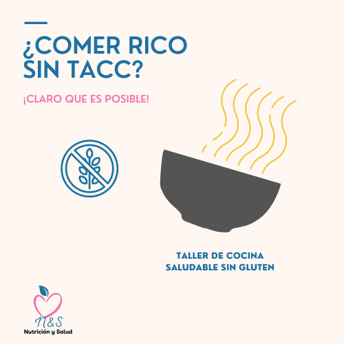

Cocina saludable sin gluten
En este taller aprenderás a cocinar alimentos dulces y salados saludables sin gluten.
Más informaciónEn este taller aprenderás a cocinar alimentos dulces y salados saludables sin gluten.
Más informaciónEn este taller te enseñaremos las nociones básicas de nutrición(nutrientes y necesidades nutricionales),etiquetados y aprenderás a realizar desayunos,almuerzos y meriendas saludables.
Más información
En este taller aprenderás a elaborar tus platos principales sin productos de origen animal.
Más informaciónEn este taller te enseñaremos como llevar tu alimentación para estar saludable frente a la pandemia del COVID-19
Más informaciónEn este taller aprenderás cómo influyen nuestras emociones en nuestra alimentación y a manejarlas.
Más informaciónEn este taller adquirirás hábitos de alimentación saludables.
Más informaciónEn este taller aprenderás a preparar diversos platos aptos para personas diabéticas.
Más informaciónEn este taller adquirirás información sobre los batidos naturales,sus beneficios y aprenderás como prepararlos.
Más informaciónEn este taller aprenderás las nociones sobre la cocina KETO,a prepar estos platos y adicionalmente información sobre los suplementos vitamínicos y cómo poder adquirir las vitaminas de los alimentos.
Más informaciónContamos con profesionales que orientarte en nutrición deportiva.
Más informaciónContamos con profesionales especializados en nutrición pediátrica.
Más informaciónContamos con profesionales especializados en diseñar planes para pacientes con enfermedades crónicas.
Más informaciónContamos con profesionales para ayudarte a lograr tus objetivos de manera saludable.
Más informaciónContamos con profesionales especializados en diseñar planes veganos o vegetarianos.
Más informaciónContamos con profesionales especializados en alergias e intolerancias alimentarias.
Más información